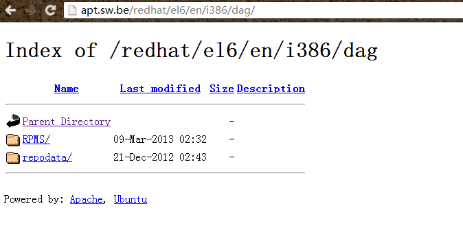

YUM
软件发行商把rpm包放在域名服务容器上，用户通过yum直接在线下载安装。
查询
yum search gcc //找出容器中和raid相关的软件
yum info gcc //列出容器中此软性版本名称等信息
yum list g* //找寻容器中名称含有g的软件
安装 与 升级
yum install gcc //安装gcc
yum update gcc //更新gcc
yum update //更新整个系统
删除软件
yum remove 软件名
容器设置添加源
在 /etc/yum.repos.d/ 下新建后缀名为 .repo 的文件里面填源信息 源格式如下;
[base]
name=CentOS-$releasever - Base
mirrorlist=http://mirrorlist.centos.org/?release=$releasever&arch=$basearch&repo=os
#baseurl=http://mirror.centos.org/centos/$releasever/os/$basearch/
enable=1
gpgcheck=1
gpgkey=file:///etc/pki/rpm-gpg/RPM-GPG-KEY-CentOS-6
[base]中base为容器名可顺便取 name后接对容器的描述可顺便写 mirrorlist后接容器可用镜像点 baseurl接容器实际地址
enable 为1启用容器 0 不启用
gpgcheck 为1启用文件证书验证 0不启用
gpgkey= 数字证书公匙位置
容器正确的地址下都有个repodata文件夹 此文件夹就是分析rpm依赖数据的放置处

上图容器地址为http://apt.sw.be/redhat/el6/en/i386/dag/
other
yum repolist all //列出当前使用的所有容器名
yum clean all//删除下载过的所有容器相关数据
yum clean [packages|headers|all]//packages 删除所有已下载软件的文件 headers删除所有已下载的软件文件头